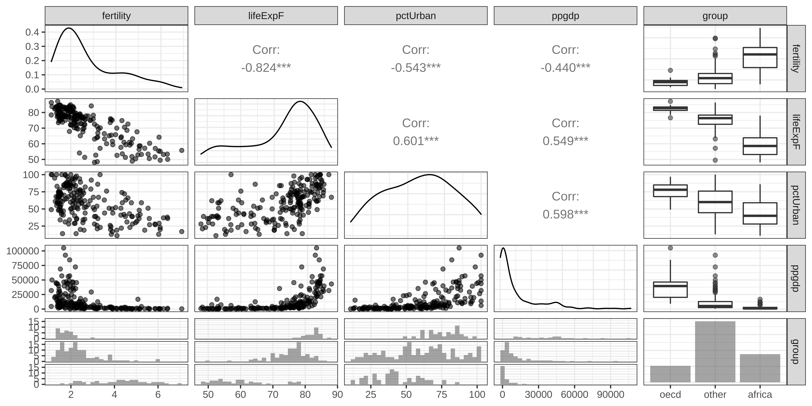
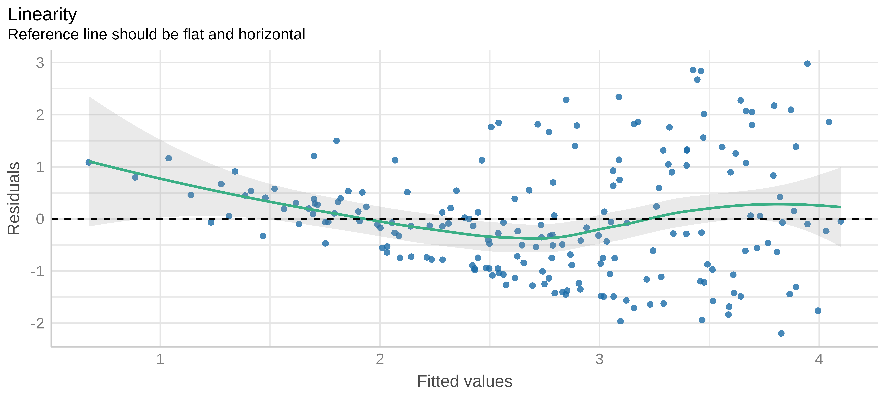

library(tidyverse) # for data wrangling
library(alr4) # for the data sets #
library(GGally)
library(parameters)
library(performance)
library(see)
library(car)
library(broom)
library(modelsummary)
library(texreg)
ggplot2::theme_set(ggplot2::theme_bw())
knitr::opts_chunk$set(
fig.width = 10,
fig.asp = 0.618,
fig.retina = 3,
dpi = 300,
out.width = "100%",
message = FALSE,
echo = TRUE,
cache = TRUE
)
my_gof <- function(fit_obj, digits = 4) {
sum_fit <- summary(fit_obj)
stars <-
pf(sum_fit$fstatistic[1],
sum_fit$fstatistic[2],
sum_fit$fstatistic[3],
lower.tail=FALSE) %>%
symnum(corr = FALSE, na = FALSE,
cutpoints = c(0, .001,.01,.05, 1),
symbols = c("***","**","*"," ")) %>%
as.character()
list(
# `R^2` = sum_fit$r.squared %>% round(digits),
# `Adj. R^2` = sum_fit$adj.r.squared %>% round(digits),
# `Num. obs.` = sum_fit$residuals %>% length(),
`Num. df` = sum_fit$df[[2]],
`F statistic` =
str_c(sum_fit$fstatistic[1] %>% round(digits), " ", stars)
)
}
screen_many_regs <-
function(fit_obj_list, ..., digits = 4, single.row = TRUE) {
if (class(fit_obj_list) == "lm")
fit_obj_list <- list(fit_obj_list)
if (length(rlang::dots_list(...)) > 0)
fit_obj_list <- fit_obj_list %>% append(rlang::dots_list(...))
# browser()
fit_obj_list %>%
screenreg(
custom.note =
map2_chr(., seq_along(.), ~ {
str_c("Model ", .y, " ", as.character(.x$call)[[2]])
}) %>%
c("*** p < 0.001; ** p < 0.01; * p < 0.05", .) %>%
str_c(collapse = "\n") ,
digits = digits,
single.row = single.row,
custom.gof.rows =
map(., ~my_gof(.x, digits)) %>%
transpose() %>%
map(unlist),
reorder.gof = c(3, 4, 5, 1, 2)
)
}Multiple Lnear Regression
MP223 - Applied Econometrics Methods for the Social Sciences
Eduard Bukin
R setup
Example 1: UN11 data
Research question
How GDP per capita \(ppgdp\) and degree of Urbanization \(pctUrban\) affects \(fertility\)?
We explore UN11 data from (Weisberg 2005). 199 observations. - Variables are:
- `fertility` - number of children per woman;
- `lifeExpF` - Female life expectancy, years;
- `ppgdp` - Per capita gross domestic product in US dollars;
- `pctUrban` - Percent of Urban population;
- `group` - variable with 3 values "oecd", "africa" and "others";Data loading
Code
Rows: 199
Columns: 5
$ group <fct> other, other, africa, africa, other, other, other, other, oe…
$ fertility <dbl> 5.968, 1.525, 2.142, 5.135, 2.000, 2.172, 1.735, 1.671, 1.94…
$ ppgdp <dbl> 499.0, 3677.2, 4473.0, 4321.9, 13750.1, 9162.1, 3030.7, 2285…
$ lifeExpF <dbl> 49.49, 80.40, 75.00, 53.17, 81.10, 79.89, 77.33, 77.75, 84.2…
$ pctUrban <dbl> 23, 53, 67, 59, 100, 93, 64, 47, 89, 68, 52, 84, 89, 29, 45,…Descriptive statistics
Data visualization
Regression
Reg. summary base R
Call:
lm(formula = fertility ~ ppgdp + pctUrban, data = un_dta)
Residuals:
Min 1Q Median 3Q Max
-2.19513 -0.81326 -0.09851 0.61527 2.97892
Coefficients:
Estimate Std. Error t value Pr(>|t|)
(Intercept) 4.374e+00 2.244e-01 19.489 < 2e-16 ***
ppgdp -1.304e-05 5.366e-06 -2.431 0.016 *
pctUrban -2.491e-02 4.217e-03 -5.907 1.51e-08 ***
---
Signif. codes: 0 '***' 0.001 '**' 0.01 '*' 0.05 '.' 0.1 ' ' 1
Residual standard error: 1.114 on 196 degrees of freedom
Multiple R-squared: 0.3155, Adjusted R-squared: 0.3085
F-statistic: 45.16 on 2 and 196 DF, p-value: < 2.2e-16Reg. summary; Coef. parameters::parameters()
See: easystats/parameters
Parameter | Coefficient | SE | 95% CI | t(196) | p
-----------------------------------------------------------------------
(Intercept) | 4.37 | 0.22 | [ 3.93, 4.82] | 19.49 | < .001
ppgdp | -1.30e-05 | 5.37e-06 | [ 0.00, 0.00] | -2.43 | 0.016
pctUrban | -0.02 | 4.22e-03 | [-0.03, -0.02] | -5.91 | < .001Reg. summary: GOF performance::performance()
Reg. summary: broom
See: tidymodels/broom
# A tibble: 3 × 5
term estimate std.error statistic p.value
<chr> <dbl> <dbl> <dbl> <dbl>
1 (Intercept) 4.37 0.224 19.5 9.49e-48
2 ppgdp -0.0000130 0.00000537 -2.43 1.60e- 2
3 pctUrban -0.0249 0.00422 -5.91 1.51e- 8# A tibble: 1 × 12
r.squared adj.r.squared sigma statistic p.value df logLik AIC BIC
<dbl> <dbl> <dbl> <dbl> <dbl> <dbl> <dbl> <dbl> <dbl>
1 0.315 0.308 1.11 45.2 7.38e-17 2 -302. 613. 626.
# … with 3 more variables: deviance <dbl>, df.residual <int>, nobs <int>Fitted values
1 2 3 4 5 6 7 8
3.7947689 3.0059609 2.6468172 2.8480812 1.7037141 1.9379459 2.7403669 2.9053011
9 10 11 12 13 14 15 16
1.4119940 2.0911577 3.0052991 1.9886579 1.9199000 3.6430633 3.0641052 2.4314920
17 18 19 20 21 22 23 24
1.3862537 2.9952823 3.3182902 0.6747918 3.4756333 2.6793659 3.0951648 2.7331546
25 26 27 28 29 30 31 32
2.0671501 2.0550740 2.4975767 3.6948524 4.0979139 3.8656137 2.8887204 1.7516254
33 34 35 36 37 38 39 40
2.7874076 1.1388925 3.3968120 3.6672314 2.0020368 3.1216901 2.4246981 3.6671114
41 42 43 44 45 46 47 48
2.7700478 2.3216559 2.6544945 3.0886981 2.7490962 2.4314607 2.2355078 2.2850335
49 50 51 52 53 54 55 56
3.4748106 1.4786284 2.4642316 2.6135811 2.5626587 3.6425976 2.6271288 3.2435170
57 58 59 60 61 62 63 64
2.7103038 3.1579408 3.8205923 2.4460360 3.9465136 3.0325880 1.6762323 1.7159693
65 66 67 68 69 70 71 72
2.7819453 2.0691912 2.8969061 3.0189655 2.0108490 3.0614501 2.4839826 1.8212757
73 74 75 76 77 78 79 80
3.2808694 3.0910653 3.4718507 3.6198606 3.6127258 3.0210259 3.0524099 1.4679432
81 82 83 84 85 86 87 88
2.5121838 1.5201712 3.6085506 3.2147493 2.5373335 2.7184888 2.2267800 1.7000065
89 90 91 92 93 94 95 96
2.2134163 3.0149341 2.1423929 2.3482393 2.7848806 3.7908188 3.2589819 1.3402665
97 98 99 100 101 102 103 104
3.4910499 3.5135847 2.5411568 2.0858293 3.6639271 3.1756366 2.2834597 2.5619918
105 106 107 108 109 110 111 112
0.8857851 1.2309605 3.5964818 3.8713509 2.4464745 3.2917600 3.4447045 1.7519703
113 114 115 116 117 118 119 120
2.5405692 3.3132026 3.2302727 2.3124210 3.7663411 3.1572796 2.7755058 2.7697167
121 122 123 124 125 126 127 128
2.8670865 3.3973768 3.5158206 3.3358407 1.8023346 3.8939496 1.7923763 1.6946431
129 130 131 132 133 134 135 136
2.4935395 1.8095518 2.9146065 3.9460818 3.0875801 2.8729742 1.2778538 2.2844786
137 138 139 140 141 142 143 144
3.4643407 2.1404996 2.5070510 2.4065499 4.0317609 2.7935766 2.3854688 3.1256589
145 146 147 148 149 150 151 152
2.6946634 2.5749830 1.5628115 1.0382976 2.0319552 2.8312421 2.4206636 3.8939809
153 154 155 156 157 158 159 160
3.5896173 3.8323997 2.7880734 2.1249136 3.2895746 2.9123630 2.8298218 3.3981047
161 162 163 164 165 166 167 168
1.3119324 2.7956994 2.8521083 3.8853555 3.4261067 2.7350866 2.0327080 3.9944969
169 170 171 172 173 174 175 176
3.0481549 3.3290636 2.5388828 3.8079068 1.6187754 1.6322415 2.9409538 3.7158988
177 178 179 180 181 182 183 184
3.6949007 2.8466123 3.4670765 3.2712912 3.7301469 3.8271317 2.6251786 2.4987419
185 186 187 188 189 190 191 192
3.0688209 3.0621762 4.0437545 2.6157528 1.7647646 1.9074322 1.6993888 1.9015464
193 194 195 196 197 198 199
3.4588083 3.6878846 1.8564110 3.5865571 3.5583256 3.4612803 3.3952165 Residuals
1 2 3 4 5 6
2.17323111 -1.48096095 -0.50481721 2.28691883 0.29628594 0.23405405
7 8 9 10 11 12
-1.00536689 -1.23430108 0.53700600 -0.74515772 -0.85729906 -0.11165790
13 14 15 16 17 18
0.51009998 -1.48606333 -1.48910516 -0.95249201 0.44874633 -0.31628228
19 20 21 22 23 24
1.75970984 1.08520825 -1.21763328 0.54963411 -1.96116482 -0.11615458
25 26 27 28 29 30
-0.26715012 -0.07107397 -0.95157666 2.05514757 -0.04691388 -1.44361367
31 32 33 34 35 36
1.39827962 -0.06062539 -0.50840760 0.46110747 1.02618805 2.06976863
37 38 39 40 41 42
-0.17003681 -1.56269009 -0.13169815 1.07488865 1.67195223 0.20915040
43 44 45 46 47 48
-0.84249451 1.13530190 -1.24809620 -0.98046070 -0.77750782 -0.78403353
49 50 51 52 53 54
2.01018936 0.40637164 1.12476835 0.38641894 -0.07265866 2.27540238
55 56 57 58 59 60
-0.23412884 -0.60751700 -0.53930380 1.82205918 0.42240766 -0.74403600
61 62 63 64 65 66
-0.09851358 -0.43058797 0.19876769 0.27103069 -0.74894529 1.12580884
67 68 69 70 71 72
1.79209386 -1.49096555 -0.55384897 0.92654987 -0.94398258 0.39572432
73 74 75 76 77 78
-1.10986945 0.74893473 1.56014928 1.25713938 -1.42272578 0.13797414
79 80 81 82 83 84
-0.05640991 -0.33094322 -1.08218377 0.57782878 -1.07055057 -1.15974928
85 86 87 88 89 90
-0.95033352 1.81651124 -0.12978005 1.20899348 -0.73741634 -0.75293412
91 92 93 94 95 96
-0.72439291 0.54076072 -0.30388056 0.83218115 0.24101810 0.91073351
97 98 99 100 101 102
-0.87004991 -0.97058471 -1.03515681 -0.32182931 -0.61292706 1.86236345
103 104 105 106 107 108
0.12654028 -1.06699184 0.79721493 -0.06796051 0.89651819 2.09664912
109 110 111 112 113 114
0.12552547 -1.62375995 2.67229550 -0.46797035 1.84389706 1.04779741
115 116 117 118 119 120
-1.64027267 -0.08542101 -0.45934113 -1.70727957 -0.32950581 -1.13971671
121 122 123 124 125 126
-0.68408649 1.31562320 -1.57682063 -0.28084074 1.49766544 -1.30694960
127 128 129 130 131 132
0.10762365 0.09935694 -0.40253945 0.32544818 -0.41460645 2.97891821
133 134 135 136 137 138
2.34341986 -0.88497422 0.67014618 -0.13847861 -0.26334069 -0.14049955
139 140 141 142 143 144
1.76294902 0.00245011 -0.23276089 0.06442340 0.02453119 -0.07565890
145 146 147 148 149 150
-1.27966338 -1.26298297 0.19418853 1.16570241 -0.64295518 -1.40324213
151 152 153 154 155 156
-0.89166361 1.38801909 -1.68261729 -0.06939970 0.69992660 0.51408637
157 158 159 160 161 162
1.31542538 -1.35036300 -0.48982181 1.32989528 0.05506763 -1.42369940
163 164 165 166 167 168
-1.37510833 0.15564447 2.85689331 -0.35208655 -0.52870796 -1.75949694
169 170 171 172 173 174
-1.05315491 0.89593645 -0.27288277 -0.63390684 0.30622457 -0.09624147
175 176 177 178 179 180
-0.16895381 -0.55389879 1.80409931 -1.44961230 -1.93907653 0.59270880
181 182 183 184 185 186
0.05285313 -2.19513168 -0.71617861 -0.47674187 -0.75282087 0.63782377
187 188 189 190 191 192
1.85724550 -1.13275277 -0.05776457 -0.04043224 0.37761115 0.14145363
193 194 195 196 197 198
-1.19480829 0.06211543 0.53458896 -1.83655714 1.37967443 2.83871967
199
-0.28621654 Residuals vs Fitted
Predicted values
See: strengejacke.github.io/ggeffects
# Predicted values of fertility
ppgdp | Predicted | 95% CI
---------------------------------
0 | 2.93 | [2.72, 3.14]
15000 | 2.74 | [2.58, 2.89]
25000 | 2.60 | [2.41, 2.80]
40000 | 2.41 | [2.09, 2.73]
55000 | 2.21 | [1.75, 2.68]
70000 | 2.02 | [1.40, 2.64]
85000 | 1.82 | [1.05, 2.60]
110000 | 1.50 | [0.46, 2.53]
Adjusted for:
* pctUrban = 57.93Application Exercise 1: Multiple regression with a dummy variable
AE04-01 Multiple Linear Regression
Bias and Efficiency
… of estimates
Sampling from the population

Unbiased and efficient
Unbiased but inefficient
Biased but efficient
Biased and inefficient
All four cases

Assumptions of the MLR
Assumptions? What? Why? BLUE?
OLS is unbiased (Gauss-Markov Theorem), when assumptions 1 to 4 are satisfied:
- Linearity
- Random Sampling
- No Collinearity
- No Endogeneity
OLS is BLUE (Gauss-Markov Theorem). AKA (Best Linear Unbiased Estimator or unbiased and efficient), when assumptions 1 to 4 + 5 are satisfied
- Homoscedasticity (No Autocorrelation)
OLS is a Classical linear model (CLM), when assumptions 1 to 5 + 6 are satisfied
- Error Terms Normality
Multiple linear regression: recap
Overview
\[y = \hat {\beta}_{0} + \hat {\beta}_{1}x_1 + \hat {\beta}_{2}x_2 + \hat {\beta}_{3}x_3 + \cdots + \hat {\beta}_{k}x_k + \hat u\]
\(\hat u\) - Error term, or disturbance containing factors other than \(x_1, x_2, \cdots, x_k\) that affect \(y\)
\(\hat {\beta}_{0}\) - intercept (constant term);
\(\hat {\beta}_{1}\), \(\hat {\beta}_{2}\), \(\hat {\beta}_{k}\) - coefficients / parameters associated with \(x_1\), \(x_2\), … \(x_k\);
\(k\) - entire set of independent variables;
Motivation
To incorporate more explanatory factors into a model;
Explicitly hold fixed (some) other factors;
Allow for more flexible functional forms;
Interpretation
- The multiple linear regression shows the effect of each variable, holding other explanatory variables fixed;
Important
We assume that all unobserved factors do not change if the explanatory variables are changed.
Examples of the multiple regression
1. Wage equation
2. Average test scores and per student spending
3. Family income and family consumption
- two explanatory variables;
- consumption is explained as a quadratic function of income;
- great care when when interpreting the coefficients;
4. CEO salary, sales and CEO tenure
Model assumes a constant elasticity relationship between CEO salary and the sales of his or her firm.
Model assumes a quadratic relationship between CEO salary and his or her tenure with the firm.

Weisberg, Sanford. 2005. Applied Linear Regression. John Wiley & Sons, Inc. https://doi.org/10.1002/0471704091.